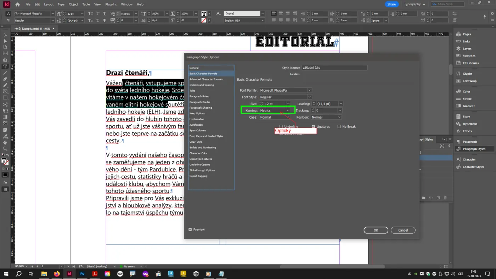
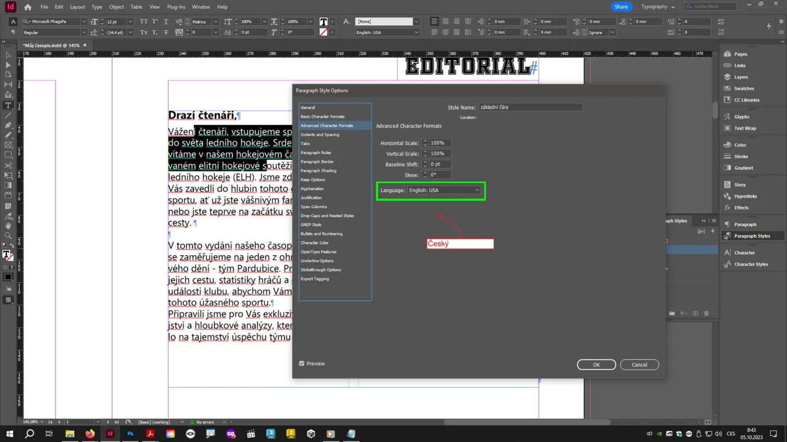
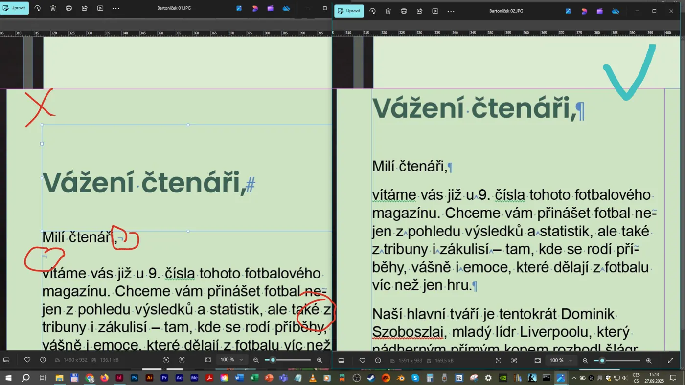
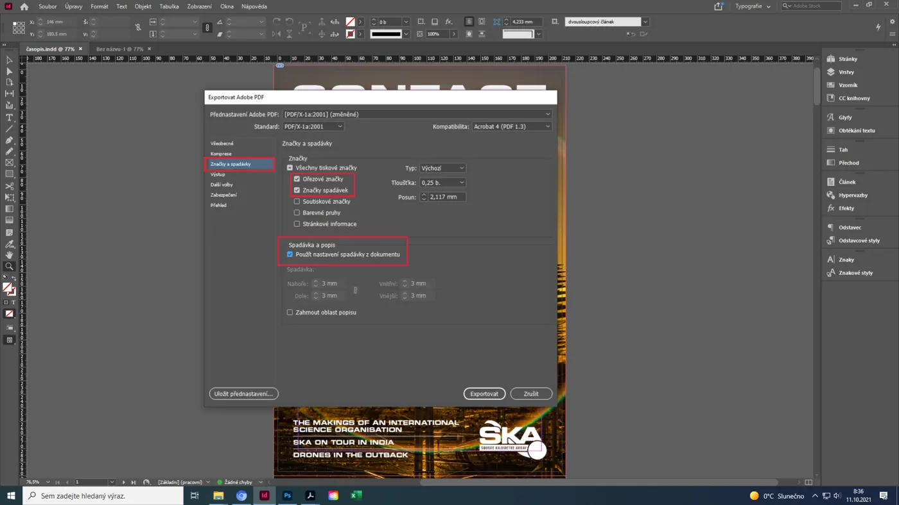
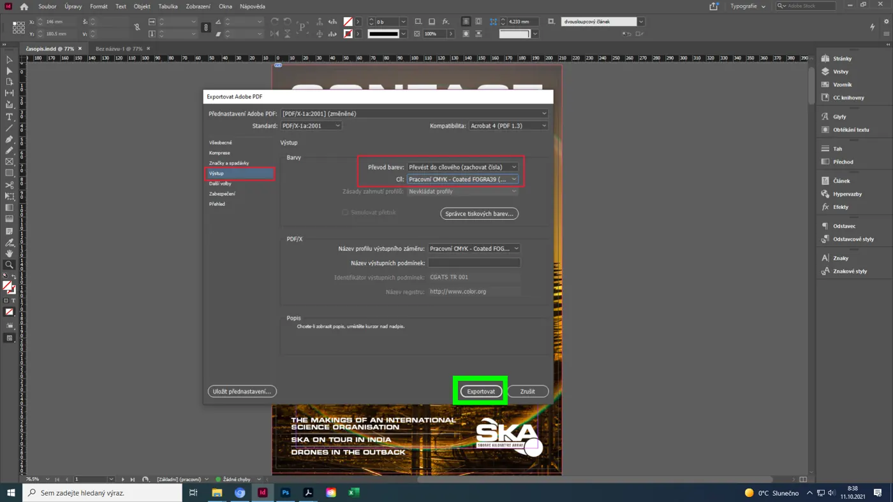
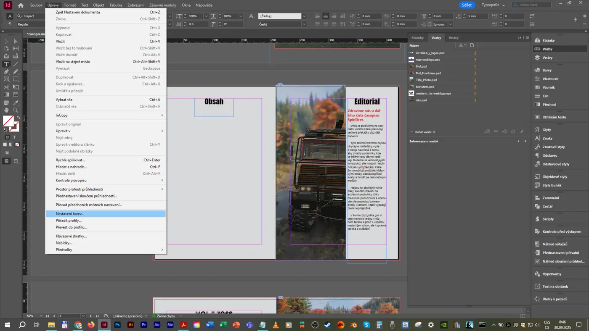
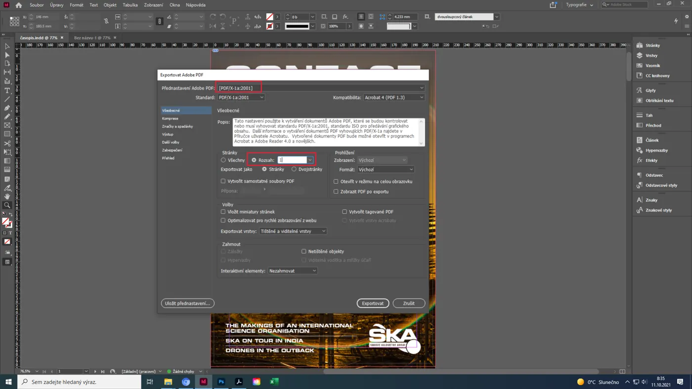

Průřezová stránka· platí pro všechna cvičení i pro maturitu
Kontrola před odevzdáním
Tohle jsou chyby, které se ve zpětné vazbě ke cvičením v Teamsech opakují pořád dokola. Každá z nich stojí body – ve cvičení i u maturity. Projdi seznam před každým odevzdáním, dokud ti nepřejde do krve. Zaškrtnutí se ukládá jen ve tvém prohlížeči.
- 1Založení dokumentu
- 2Odstavcové styly
- 3Text a typografie
- 4Obrázky a barvy
- 5Export PDF/X
- 6Obálky a kniha
- 7Portfolio
Chyby, které se táhnou celou prací
Špatně založený dokument se opravuje nejhůř. U maturity máš na založení tři minuty – udělej to pořádně.

Vše, co se opakuje, řeší styl – ne ruční formátování
Odstavcové, znakové a objektové styly jsou jádrem InDesignu. Komise pozná na první pohled, jestli je sazba „nastylovaná“, nebo naklikaná ručně.




Drobnosti, které dělají profesionální sazbu
Většinu z nich opraví TypoSkript a funkce Hledat a nahradit. Ale musíš vědět, co hledat, a umět to komisi vysvětlit.

Časopis vychází od roku 2019 a má 24 stran. Formát je 210 x 297 mm, tisk 300 dpi. Redakce sídlí v Pardubicích, Karla IV. 13, 530 02 Pardubice. Rozhovor najdete na stranách 10-12.
Časopis vychází od roku 2019 a má 24 stran. Formát je 210 × 297 mm, tisk 300 dpi. Redakce sídlí v Pardubicích, Karla IV. 13, 530 02 Pardubice. Rozhovor najdete na stranách 10–12.
Zvýrazněná místa: pevné mezery u čísel a jednotek, znaménko ×, PSČ s městem, pomlčka v rozsahu, předložky v a k s pevnou mezerou.
Tisk je nemilosrdný: CMYK, 300 ppi, správný formát
Co na monitoru vypadá dobře, v tiskárně selže. Tiskárna kontroluje efektivní ppi, barevný režim a formáty vložených souborů.
Efektivní ppi
Jak zmenšení v rámečku mění rozlišeníEfektivní ppi = počet pixelů ÷ šířka v palcích (1 palec = 25,4 mm). Skutečné ppi uložené v souboru (72, 300…) nehraje roli – rozhoduje, na jakou šířku pixely rozprostřeš.
Bez spadávky a značek se nedá tisknout
Tiskové PDF má přesně dané náležitosti. Komise si PDF otevře a první, co uvidí, jsou (nebo nejsou) ořezové značky.




Hřbet, drážky, spadávka 15 mm a čárový kód
Obálka je samostatný jednostránkový dokument. Její rozměr se počítá – nehádá.
Kalkulačka obálky
Hřbet, V2, V8 a přebalKaždá práce musí být správně popsaná
U maturity popisuješ vlastní práci slovy – stejné údaje, které patří k práci v portfoliu, musíš umět říct komisi.
Vzor popisu práce
Obálka autorského periodika „Hattrick“
Adobe Photoshop (úprava fotografie, maska) + Adobe InDesign (sazba). Formát A4 210 × 297 mm + 3 mm spadávka. Tiskové PDF/X-1a:2001, CMYK, výstupní profil Coated FOGRA39, 300 dpi, efektivní ppi vložených obrázků 320–410. Písmo Barlow Condensed (titulky) a Source Serif (texty). Fotografie vlastní.
U maturityPřesně takto „přečti“ komisi svůj soubor: typ, program, rozměr, formát, barvy, rozlišení. Je to minuta, která zarámuje celou obhajobu.
Vyzkoušej si, co se děje v sazbě
Tři ukázky k nejčastějším chybám. Další najdeš v jednotlivých lekcích.
Sirotci a vdovy
Co udělá volba „Nerozdělovat řádky“Vdova = poslední řádek odstavce osaměle na začátku sloupce.
Se zapnutou volbou InDesign drží alespoň 2 řádky na začátku i na konci odstavce pohromadě.
Dělení slov
Před posledními dvěma, nebo třemi písmeny?Spadávka a ořezové značky
Proč musí být pozadí dotažené za okrajCo ti opraví většinu chyb automaticky
Skripty a dotazy jsou ke stažení na školním OneDrive. Instalace trvá dvě minuty, ušetří hodiny.
AppData\Roaming\Adobe\InDesign\Version 21.0\cs_CZ\Find-Change Queries\GREP.